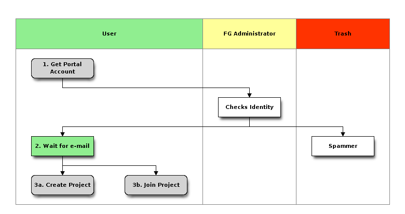
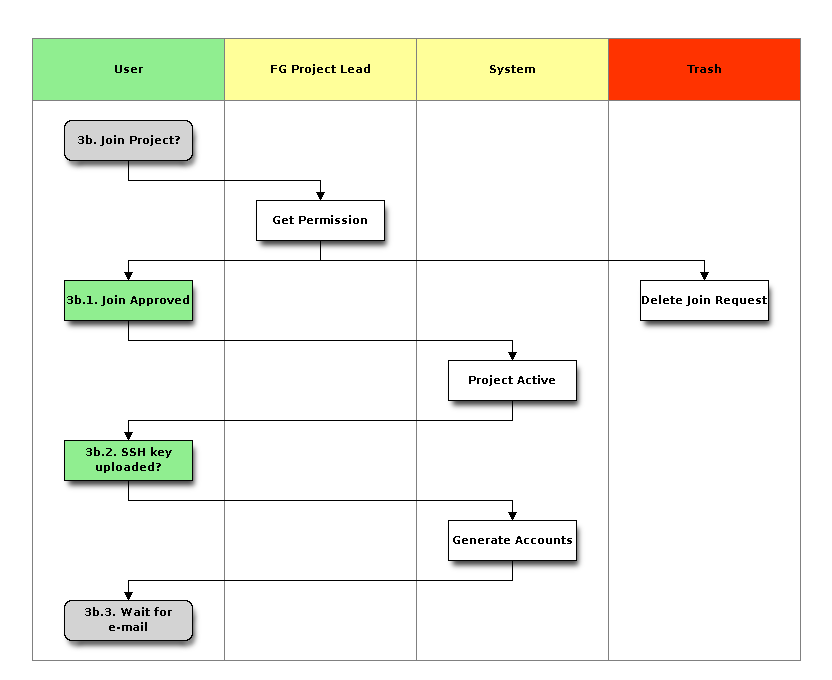

6. Project and Account Management¶
Todo
all links to http://portal.futuregrid/my do not yet work. Carrie must implement this as communicated to her and Barbara a while ago. We have not gotten feedback from Carrie yet. If no feedback we may have to have Allan implement? This is needed to make entire documentation easier on account management. This is one of the root causes for confusion. Alternatively we coudl do my.futuregrid.org.
It is very easy to get a project and accounts associated with this project on FutureGrid. This section is structured as follows:
- Terminology: a list of terms relevant to the account creation.
- Quickstart: a quickstart guide to remind those that have previously used FutureGrid on what to do.
- In Depth Information: an in depth description including diagrams that help you understand the process of the account application.
- FAQ about Accounts: a list of Frequently Asked Questions related to Accounts
- Projects and Accounts for XSEDE users: a documentation tailored for XSEDE users to apply for FG through the XSEDE portal (under development)
6.1. Terminology¶
- Portal Account:
- A portal account is necessary to comunicate information about yourself to the FutureGrid team s they can verify that you exist and you are a community member with need to use FutureGrid. Once you have a portal account approved you can apply for a project.
- Resource Account:
- A portal account will not give you access to the FutureGrid resources. You will have to go to the portal and join a project or create one.
- Valid Project:
- At least one project you belong to must be valid. A valid project is one that is aproved by a comittee. If you are not in an active project your access to FutureGrid will be blocked. Projects that do not report any progress will be blocked after a while. Note that you aagree to update us with regular resullts reportedvia the portal as this is part of your agreement to use FutureGrid.
- Uploaded SSH Key:
- As you are using remote compute resources we will require that you are very familiar with ssh key management. You will need to upload a public ssh key to the portal so we can create you an account and use that public ssh key so you log into the resources.
6.2. Quickstart¶
Todo
add the links
If you have not created a project on FutureGrid before we recommend that you do not use the quickstart quide and instead read the full documentation. To remind you what you have to do here are a couple steps that you need to do:
For non XSEDE users:
- Create a Portal account and wait for confirmation via e-mail
- Join a project or create a new project and wait for confirmation. Note that you must communicate with the project lead first before you can join a project.
For XSEDE users:
- Please go to the XSEDE portal and apply for an XSEDE portal account.
- Create a new project as documented in the XSEDE portal allocations page or ask you XSEDE project lead to join you to the project.
- It will take some time to get youe account activated
6.3. Projects and Accounts for XSEDE users¶
Todo
Gregor writes this section
6.4. In Depth Information¶
6.4.1. Create a Portal account¶
Todo
update the links
In order to utilize any FutureGrid resource, you must posses a FutureGrid portal account. Thus, apply for your **portal account * before you attempt anything else. This account is used to gather some information that we will use in the next steps. You must make sure that the information is complete before you proceed to the second step. FutureGrid performs basic verification of the information you provide when creating an account, so it may take a little while before your account is approved. Once you have a portal account, please proceed.
Please note that you cannot access FutureGrid resources until you complete the next steps.
Here are a few tips that make it easy for you
- On the portal’s main page at https://portal.futuregrid.org appears a Register Link.
- Following you will be able to Create a new account on the portal.
- Fill in ALL fields as much as you can.
- Note that fields with * are mandatory
- It is important that you specify your address information completely.
- If you are a graduate or undergraduate student please fill out your advisors contact information in the field specially dedicated for it. If he has a FutureGrid Portal name, please also add his portal name if you know it in that field.
- If you have an e-mail address from your institution, we ask that you use this address instead of one from gmail, hotmail, or other e-mail services that we cannot trace back to your name or institution.
- Usage of all non institutional addresses will prolong the application process.
- Please note that creating a portal account does not give you access to any FutureGrid resources, for that you have to complete step 2 and 3.
- Please remember that checking your information will take time. Thus we recommend that you wait till you get a message that tells you that your portal account has been approved. Then continue to The next step. We are not conducting any portal approval outside of 10am-4pm EST. If you are easily to be identified your approval will take 1-2 days, if not, we have either problems verifying your data or something else is not right. In case you appear to be a spammer we will not notify you.
- In case you are teaching a class class we have some special instructions for you and after you apply for a portal account you may want to get in contact with us via the help form
- After your account has been approved, you can correct the information as part of the portal account User Profile Management.

| Name | Description |
|---|---|
|
Apply for a portal account at https://portal.futuregrid.org/user/register |
| Checks Identity | Administrator checks the data submitted. |
| Spammer | Spammers will be deleted without notification. |
|
Wait for the e-mail that approves your portal account. If you have not head from us within 2 buisiness days use the help form on the portal to contact us. |
| 3a. Create Project | Create a new Project. |
| 3b. Join Project | Join an existing Project. |
6.4.2. Create a Project¶
To apply for a new project, fill out the project creation form. Through this form we gather some important information about the project so we can review it for approval. This information is used to report and document not only to us but also to our sponsors which activities are conducted on FutureGrid. The more precise you are in your descriptions and filling out the forms the better we can highlight your project. Once a project is approved, project members can join a project. This must be conducted by the project lead.
The Project PI has agreed to certain reporting requirements to provide information to FutureGrid. He will be responsible to make sure that they are completed and also implemented with the users joining the project. Thus the user is responsible to comply with the terms of the project in regards to reporting and acknowledgements in case of publications. Each project PI has the responsibility to communicate such requirements to the members and managers. The project agreements overwrite the individuals agreement.

| Name | Description |
|---|---|
| 3a. Create new nProject | Fill out the project form at http:// . |
| Review | Comittee reviews the project and corresponds with project lead to improve |
| 3a.1.. Wait for n e-mail | Wait for an e-mail that you have an account |
| 3a.2. Projectn Approved | The project has been approved. |
| 3a.3.i. Membersn add, del., alumni | manage the project members |
| 3a.3.ii. Reportn Results | Make project member Alumni |
| Review Results | Comittee recieves results for review |
| 4.Renewal | Renewla of the project |
6.4.3. Join a Project¶
To join an existing project, ask the project lead or project manager for that project to add you to their project using that same form. If the project is set to “accept public join request”, you may also send a request in the portal. To do this, first view the project list and go to the project detail page by clicking the project title. If the project is set by the project lead to “accept join request”, then you’ll see a large gray ‘Join this project’ button in the upper right corner of the page. Click the button to send the join request to the project lead and manager so they can process your request.

| Name | Description |
|---|---|
| 3b. Join Project? | Join an existing Project. |
| Get Permission | Get permission from the project lead to join the project. |
| Delete Join Request | Project leads will carefully evaluate if the person requesting to join is elidgeble. If not join requests will be deleted without notification requires to those that want to join. |
| 3b.1. Join Approved | The project lead has approved that you join the project. Go to the project page and press the join button/link. |
| Project Active | Checks if the project is actve the project. |
| 3b.2. SSH keyn uploaded? | You must have uploaded your ssh key to use Futuregrid resources |
| Generate Accounts | Generate accounts to resources |
| 3b.3. Wait forn e-mail | Wait for an e-mail that you have an account |
6.5. Upload Your SSH Public Key(s)¶
In order to be able to log into the started VMs, among other purposes, you need to provide FG with a secure-shell (ssh) public key. If you are already a frequent user of ssh, and have a private and public key pair, it is perfectly reasonable to provide your public key. It’s public, after all.
To upload the chosen public key:
- Copy your public identity into your system clipboard.
- Log into the FG portal https://portal.futuregrid.org/my/ssh-keys.
- Click the link that says Add a public key.
If you are not familiar with ssh keys we have provided a more elaborate section about Using SSH keys
Changes to keys will take up to 1 hour to propagate through the system services. You are not allowed to use password less keys. Your account may be deactivated if you violate this policy.
6.6. OpenId Integration¶
Often users may not remember the pasword or username of the FG portal. However, they may have an easier time to remember their openid from for example google. It is possible to use your openid account and register it once you gain access to the portal. Please visit (https://portal.futuregrid.org/my/openid)
6.7. Using FutureGrid Resources¶
Todo
link in this section not yet set
To use resources, you must have
- a portal account
- be part of a valid project
- have uploaded a public key to the portal that you wll use to log into some of its resources.
Once these conditions are met, you will be able to access the resources and services that your project has requested and been authorized to use. See the services for a list of FutureGrid resources and services This includes cloud and HPC resources. Accounts to these resources will be automatically generated once you have conducted the above steps. The turnaround time for you getting access to the system is typically between 30 minutes and one day.
6.8. FAQ about Accounts¶
Additional FAQ’s
What do I need to get an account on resources?
- A valid portal account
- Be member of a valid project
- You must upload your ssh key via the portal
What do I have to do if I am a teacher and want to apply for a class project?
- Create a portal account if you do not have one
- Apply for an educational project, carefuly filling out the form including how many students, broader impact, such as support of minorities, what will be learned, the course syllabus if available, a link to the course web page if available, the duration of the course including a time when the course is completed. We typically add a month so that incomplets can be done easily.
- Make sure you enable the join button of the project.
- Determine a class “join code” that your students can use at time of their portal registration. Communicate that join code with a help ticket.
- You will be able to manage the join of students yourself. Be carefull that you only join those students that are in your class.
- If the student roster is cahnging, just edit the project details and add remove them.
- Make sure you write a results section after your class is over.